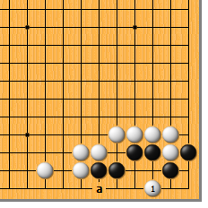
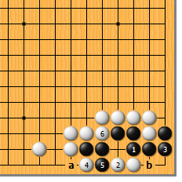
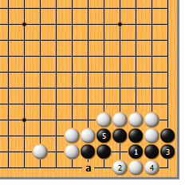
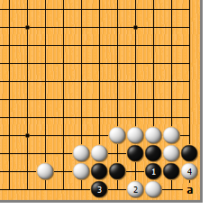
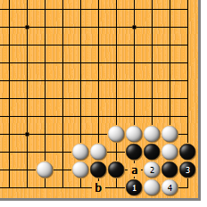
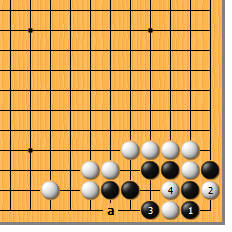
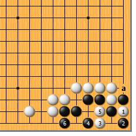

|  |  | |
| 图1 白1如于a位扳，黑1位倒虎，是铁定的活棋。由此可见，白1点是此形的急所。不过，后面的变化你都算清了吗？？
| 图2 黑1的粘就很头疼。白2无论如何也要长，黑3角里粘，看上去要双活。然而，白4扳突然发力，黑5挡时，白6打好手！黑a提则白b长，黑双活的美梦彻底破裂。 | |
|  |  | |
| 图3 黑1、3后，白4如马上长，则前功尽弃。黑5粘，成双活。黑5也可走a位的立，各有利弊。 | 图4 黑1、白2后，黑3如马上立，问题还要简单。白4扑一手即可，黑a位的提是后手死。
| |
|  |  | |
图5 黑1尖顶也很凶。白2必长，黑3粘时，白不要乱了阵脚。白4曲好！要命的是这还是先手，黑眼见着a、b不能两全。黑3如于4位挡，白3位扑即可。
| 图6 黑1直接挡，白2扑。黑3夹打时，白可不要放弃哦……白4长，又是先手，黑还是来不及走a位的立。黑1如于2位粘，白4位断。 | |
|  | 您的高见 | |
图7 白1先扑，可谓虎头蛇尾。黑2提，白3再点时，情况已经不同了。黑4尖顶，白5长时，黑可放心地于6位立，活了。白3如于a位打，结果是劫，下次再介绍啦。 |